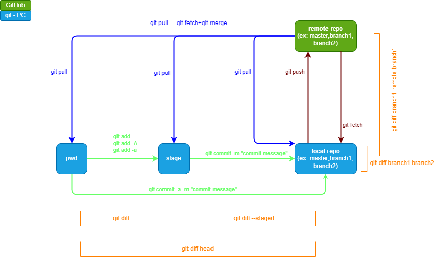

Git & GitHub - Cheat sheet
Details about Git
Git

What
-
an open source
-
so it is free to use and developers can modify the source code to
suit their needs
-
distributed version-control system, for software development mainly
- meaning there is no central point of control
-
every computer is a full-fledged repository with complete history
and full version-tracking abilities
- but not a programming language
- developed by Linus Torvalds in 2005
Why
-
Collaboration
-
allows multiple developers to work on the same project at the same
time without interfering with one another
-
Branching
-
allows developers to create branches of a project, so they can
make changes without affecting the main version of the project
-
Speed
-
fast and efficient system which allows developers to work quickly
and seamlessly on projects
-
Security
-
uses encryption to secure data transfer and storage, which helps
keep sensitive information safe
Details about GitHub
GitHub

What
- A platform for code hosting and collaborating on projects using git
- It serves as a location for uploading copies of a Git repository
Why
- makes it easy for developers to share code files and collaborate with fellow developers
- also serves as a social networking site where developers can openly network, collaborate, and pitch their work
Git and GitHub workflow
Workflow

Commands
One time commands
- git init
- git config --global user.email "xyz@gmail.com"
- git config --global user.name "yourName"
- git remote add origin "url - http or SHH"
- git clone "url - http or SHH"
Frequently used commands
- git status
- git log
- git add -A
- git add .
- git add -u
- git commit -m "message"
- git commit -am "message"
- git diff
- git diff --staged
- git diff head
- git branch
- git checkout
- git push remote branch1 or just - git push
- git pull remote branch1 or just - git pull
- git fetch
- git merge branch1
- git rebase Master